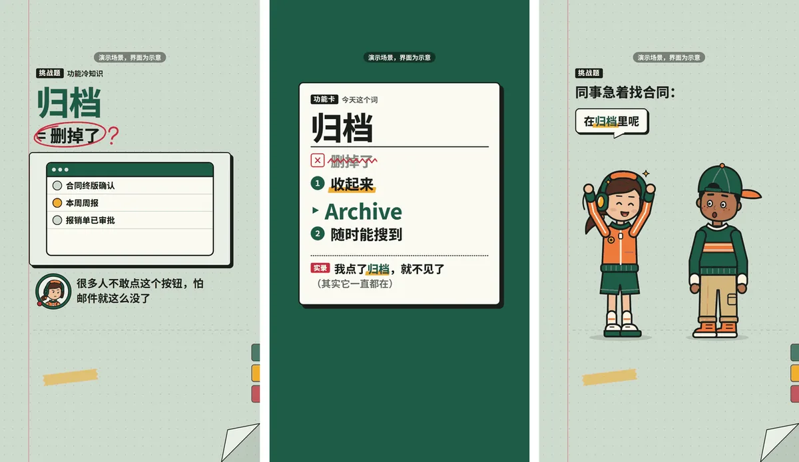
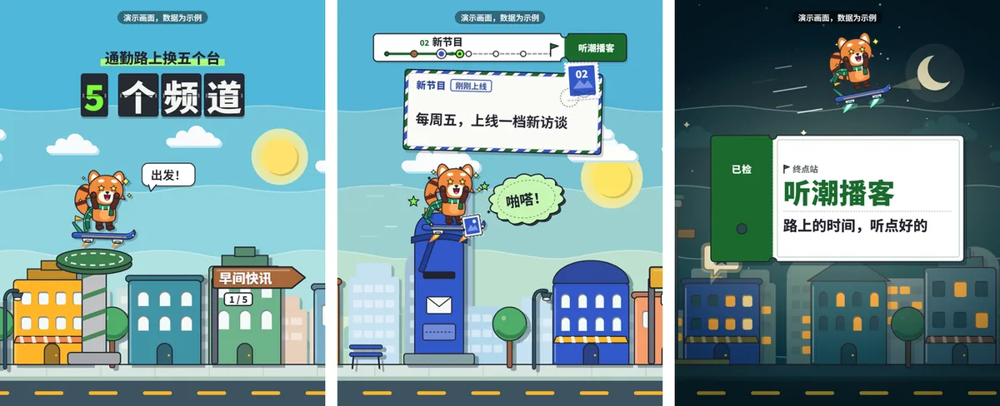
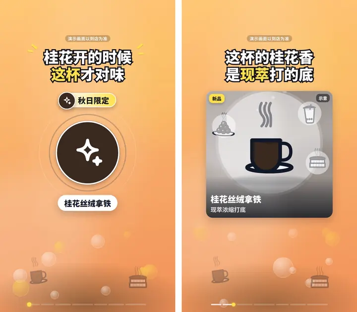
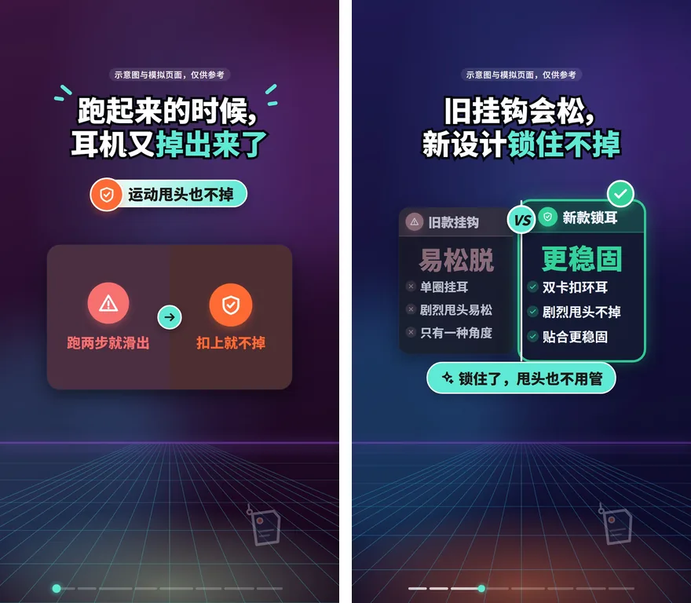
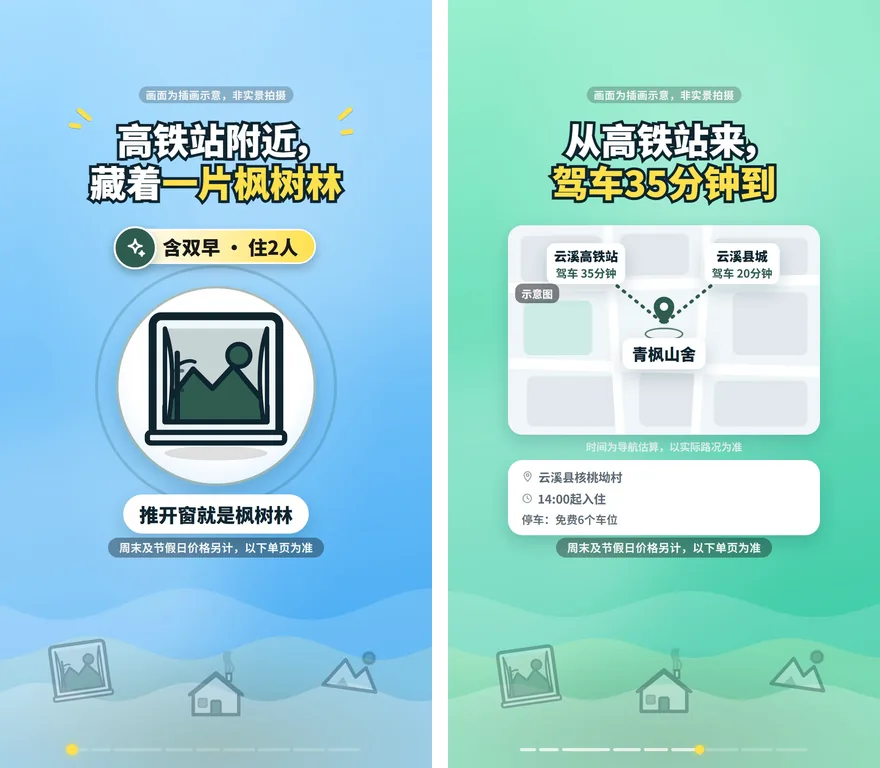
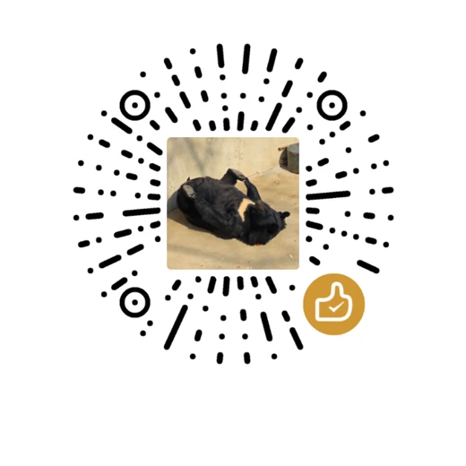

配方 01
cards 卡片信息流
渐变底 + 居中白卡片 + 描边大字幕，一镜讲一件事。
适合单一卖点、使用流程、界面演示、实物和门店、价目表
写一份产品简报，AI 挑镜头、写文案，一条命令出一支竖版宣传片。
还是预览版：成片先当初稿，看完整片、改完再发。
三种配方的实际渲染效果，产品和数据都是虚构的
配方由强模型先调好，便宜模型照着填，就能出同一水准的片。
把简报交给 AI 编程助手、无头脚本或 DeepSeek Harness 插件，模型只写一份分镜，版式、动效、节奏都在现成组件里，一条命令出一支带配乐和音效的竖版宣传片。
分镜里写 meta.style 选配方，不写就是默认的 cards。下面都是实际渲染的画面，产品和数据都是虚构的。
渐变底 + 居中白卡片 + 描边大字幕，一镜讲一件事。
适合单一卖点、使用流程、界面演示、实物和门店、价目表

红笔圈出一个常见误解 → 出一道选择题 → 揭晓 → 词条卡讲清楚。
适合有一个常见误解、能出一道只有一个正确答案的选择题（「X 到底是什么意思？」）

原创吉祥物一镜到底横穿剪纸城市，每站一张明信片讲一个类别。
适合有 4–6 个清楚的类别、功能或站点，想按一条路线挨站逛一遍
怎么选：能出一道选择题 → quiz；有 4–6 个类别想挨站逛 → journey；其余情况 → cards，也就是不写。
每个行业包带合规规则、推荐的镜头结构、给商家的简报模板和一份回归测试简报。每张图左边是第 0 帧封面，右边是片中一帧。
ledger
food
ecommerceeducationbeauty
travel校验规则没覆盖，硬要做也不保证合规。
便宜模型负责填空；版式、合规和出片质检交给配方和脚本。
模型只写一份 storyboard.json：挑镜头、填文字，不写代码、不算坐标。版式、动效、节奏都在现成组件里。
每种风格先由强模型做到位，再写成组件和校验规则；便宜模型照着填，出片水准由配方兜底。
内置《广告法》极限词、六个行业的合规规则、断词换行、安全区等几十条校验，报错用中文写清楚哪里要改。
校验 → 配乐 → 渲染 → 拼图 → 检查帧，全自动；自查有 ✗ 的片子不交付。
按镜头切点卡拍，响度统一到 -16 LUFS。
字幕可选中文或英文；英文片每半拍扫一次画面，混进汉字就不交付。
Apache-2.0，注明出处即可；渲染出的视频不要求署名。
从一份简报到一支能交付的片子，中间是这六步。
先装依赖、跑个样例，再挑一种方式让 AI 写分镜。
git clone https://github.com/Finderchangchang/brewreel.git
cd brewreel/template && npm install && npx remotion browser ensure
cd .. && pip install numpy scipynpm install 装渲染引擎；npx remotion browser ensure 下载一次 Chrome Headless Shell，供无头渲染用。
node scripts/validate.mjs examples/ledger.json
node scripts/make.mjs examples/ledger.json --out ../brewreel-out/ledger校验那条通过就说明装好了。出片那条要几分钟，终端末行出现「交付：<mp4 路径>」才算出片；--out 不能指向仓库里面。
| 操作系统 | Windows（仅 x64）/ macOS ≥ 15 / Linux（glibc ≥ 2.35，需要 libnss3 / libgbm / libasound2 等共享库；不支持 Alpine、NixOS） |
|---|---|
| Node.js | ≥ 18（建议 20 LTS 或更高）；DeepSeek Harness 插件要 22.19+ 的 22.x 或 24+ |
| Python | 3.10+；配乐脚本要 numpy / scipy，llm_make.py 只用标准库 |
| 首次下载 | 渲染依赖约几百 MB，外加约 110 MB 的 Chrome Headless Shell |
成片 1080×1920（journey 默认 1080×1350），30 fps，带配乐和音效。
适合 Claude Code、Codex、opencode 等能读 SKILL.md 的 AI 编程助手。把整个仓库 clone 到 ~/.claude/skills/brewreel/（Claude Code）或 ~/.agents/skills/brewreel/（通用约定），也可以用你工具自带的 skill 安装命令指向本仓库。然后把简报交给助手（模板见 brief-template.md），让它照 SKILL.md 出片。
装成 Claude Code 的 skill
git clone https://github.com/Finderchangchang/brewreel.git ~/.claude/skills/brewreel可选：让 Claude Code 走 DeepSeek（占位符换成你自己的 key）
export ANTHROPIC_BASE_URL=https://api.deepseek.com/anthropic
export ANTHROPIC_AUTH_TOKEN=<你的 DeepSeek API Key>
export ANTHROPIC_MODEL=deepseek-flash[1m]llm_make.py可用不需要 agent。脚本直接调 OpenAI 兼容接口（默认 DeepSeek）：简报进、视频出，校验报错会原样回喂给模型重试（至多 3 次）。
export LLM_API_KEY=<你的 DeepSeek API Key>
export LLM_BASE_URL=https://api.deepseek.com
export LLM_MODEL=deepseek-chat
python scripts/llm_make.py path/to/brief.mdWindows PowerShell 用 $env:LLM_API_KEY="..." 代替 export。以上都是占位符，换成你自己的 key；不要把 key 提交进仓库或写进 issue。加 --dry-run 不调接口、不读密钥，只把拼好的提示写出来并估算 token 数。
dsh-brewreel可从仓库目录安装可从仓库目录安装，npm 包即将上线，还没接真实 DeepSeek 模型实测。
装上后，模型照着 skill 写分镜，校验、出片、核对都调插件的 7 个工具完成，出片在后台跑、报进度。需要 dsh 0.1.7-rc.2 或更高的 0.1.x、Node.js 22.19+ 的 22.x 或 24+，以及 pnpm。
插件说明npm install -g @deepseek-ai/dsh@0.1.7-rc.2 pnpm # 还没装 dsh 时
git clone https://github.com/Finderchangchang/brewreel.git
dsh plugin --profile web add ./brewreel/integrations/deepseek-harness
dsh web第三条命令在 clone 的上一级目录执行。初次使用时对模型说「检查一下视频插件环境」，它会调 doctor，经你同意后再调 setup 装渲染依赖。
这是预览版。下面照实写，用之前先看一遍。
SKILL.md，从零写分镜、跑校验、出片，共 9 支，没有一支到 7 分（我们定的「可以直接发」的线）。软件 / 工具类整体 5–6 分、合规 7–8 分；行业片整体 4–5 分、合规 4–5 分，失分主要在跨字段的事实问题上。建议用法：把成片当初稿，看完整片再改再发，不要只看校验通过就发；行业片尽量配商家实拍照片，出片时传 --brief <简报>，交付前把画面上每个价格、条件、日期、营业时间、距离逐条和简报对一遍。
仍存在的其他问题和各轮测试结果，见 README 的「已知限制」。
下面两项还没上线，做好后会写进更新日志。
dsh-brewreel即将上线现在插件要从仓库目录安装；npm 包发布后，可以直接 dsh plugin --profile web add dsh-brewreel 装上。
MiniMax 语音 + 逐字字幕。现在的成片没有配音，需要的话出片后在剪辑软件或平台里自己加。
好酒靠的是配方，原料普通也能酿好。
先让强模型把一种视频风格做到位，再把版式、动效、节奏和规则写成一份配方：现成组件加校验脚本。DeepSeek 这类便宜模型就是普通原料，照着配方填分镜，就能酿出同一水准的片子。
精酿圈的习惯是自己酿、把配方拿出来分享。这里对应开源和二创、三创：一创直接拿现成配方开酿；二创换皮，换配色、字体、角色；三创按 distill/ 的六步流程拆一支视频，调出新配方。
调配方只学结构：叙事、节奏、动效、镜头语言。皮肤必须自己设计：配色、角色、招牌细节。check-originality.mjs 会自动检查：和参考片的配色色差（CIEDE2000）要拉够，招牌清单每一条都要写明换成了什么或已删除。
scripts/make_bgm.py 用 numpy / scipy 现场合成：乐器、和声、旋律、混音、母带都在脚本里，不用外部素材库。每个镜头一个段落，音符落在整拍 / 半拍，镜头切换处有镲或加花，所以音乐是卡着镜头走的；响度校到 -16 LUFS。
因为是现场合成的，没有版权问题。正式发抖音这类平台时，也可以出片时加 --no-bgm 出静音版，再在平台里配乐。
目前没有，没有接 TTS。画面靠字幕、逐字点亮和音效把话说清楚；配音在计划中。现在需要配音的话，出片后在剪辑软件或平台里自己加；用了 AI 配音，记得按平台要求勾选 AI 生成内容声明。
项目不生成「看起来像真实拍摄」的拟真图片。没有商家素材时，画面用组件和简笔插画兜底，并明确标注，不冒充实拍。有商家实拍照片（门店、成品、价目表）时，用实拍镜头放进去，可信度会好很多；照片是否授权会列进「需人工复核」。
还不建议。把成片当初稿：看完整片，改掉别扭的文案和重复的卖点再发；行业片把画面上每个价格、条件、日期、营业时间、距离逐条和简报对一遍。实测情况见上面的「现在能用到什么程度」。
本项目免费开源。模型调用用你自己的 API Key，按用量在服务商那边结算，项目不经手任何费用；渲染在你自己的电脑上跑。渲染引擎 Remotion 对 4 人及以上的营利组织收费，见下一条。
Remotion 是源码可见、非开源的软件：个人、3 人及以下的营利公司、非营利组织可免费使用（含商用）；4 人及以上的营利组织需要购买 Remotion 的 Company License，详见 remotion.dev/license。本仓库的 Apache-2.0 不改变 Remotion 自己的许可条件。
本仓库把 remotion / @remotion/cli 钉在 4.0.529。升级到 5.0 后，Remotion 免费层需要在配置里传 licenseKey（个人 / 3 人以下公司 / 非营利填 free-license），升级前请先看 THIRD_PARTY_LICENSES.md。
想听真实需求：你想给什么产品做片？缺哪种配方、哪个行业？哪条合规规则误伤了你？公众号私信或开 issue 都行。
误伤或漏拦的校验规则、渲染出错、看着别扭的画面，能附上分镜 JSON 和报错就更好。别贴 API Key。
提一个 Issue合作、赞助、需求都走公众号私信，扫码关注后在后台留言。
暂无专属交流群。

如果精酿帮上了你的忙，欢迎请我喝杯咖啡。每一份配方都是一杯杯咖啡熬出来的：这杯续上，下一份配方就调得快一点。
量力而行，不用有压力；点个 Star、提个 issue，或者给我看看你酿的片子，我一样开心。